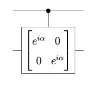
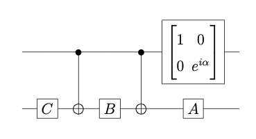

Compuertas Control-U¶
Las compuertas de tipo control se derivan de sus contrapartes clasicas. Dichas compuertas son de tipo condicionado, ya que ejecutan una rutina o tarea B, si una condicion determinada A es verdad, If A, then B. El caso mas popular de las compuertas de control, es el caso de la compuerta NOT. Las compuertas cuanticas son representadas por operadores que actuan sobre los vectores de estado, por lo tanto, la compuerta NOT tiene el siguiente efecto para los estados base |0> y |1>:
\( NOT\begin{pmatrix} 1 \\ 0 \end{pmatrix} = \begin{pmatrix} 0 \\ 1 \end{pmatrix} \)
y de la misma manera,
\( NOT\begin{pmatrix} 0 \\ 1 \end{pmatrix} = \begin{pmatrix} 1 \\ 0 \end{pmatrix} \)
y por lo tanto, la compuerta NOT tiene la siguiente representacion de matriz:
\( NOT = \begin{pmatrix} 0 & 1 \\ 1 & 0 \end{pmatrix} = \begin{pmatrix} 0 \\ 1 \end{pmatrix} \)
La compuerta NOT, entonces corresponde a la matriz X de Pauli, y puede ser aplicada a sistemas de un cubit. La compuerta CNOT (controlled-NOT) actúa sobre mas de un cubit, en los bits de control y el cubit target. La compuerta CNOT aplica la compuerta NOT sobre el cubit target si el cubit control está en 0 y lo deja igual si está en 1. El cubit control queda inalterado. La compuerta CNOT tiene la siguiente representacion de matriz:
\( \begin{pmatrix} 1 & 0 & 0 & 0 \\ 0 & 1 & 0 & 0 \\ 0 & 0 & 0 & 1 \\ 0 & 0 & 1 & 0 \end{pmatrix} \)
De la misma forma que la compuerta CNOT, se puede definir la compuerta Control-U (c-U) para cualquier compuerta de 1-cubit U que sera una compuerta de 1-cubit que cumple con las siguientes condiciones:
\( |c>|t> \rightarrow |c> U^{c}|t> \)
donde |c> corresponde al cubit de control, |t> al cubit target, y la transformacion se aplica al cubit |t>, condicionado por el cubit |c>. Vamos a ver ahora como crear un circuito equivalente a la compuerta c-U usando compuertas de 1-cubit y compuertas CNOT. Para ello usaremos la descomposicion \(U = e^{i\alpha}AXBXC\) del corolario demostrado anteriormente.
Primero veremos cómo aplicar el factor de fase \(e^{i\alpha}\) sobre el bit target en forma controlada por el bit control. Esto quiere decir que si el bit control es |1>, la transformacion es aplicada. Por el contrario, si el bit control es |0>, la transformacion no es aplicado. Por esta razon, la compuerta se denomina de desfasaje controlado. El circuito para dicha compuerta es el siguiente:

Ahora es facil darse cuenta de que el circuito equivalente a la compuerta c-U es el de la siguiente figura:

Este circuito se compone de dos partes:
(1) Aplicar el cambio de fase mediante el factor \(e^{i\alpha}\) al cúbit target, controlado por el cúbit de control. Esto implica, que si el cúbit de control se encuentra en el estado |0>, el cúbit target se queda en el mismo estado. Sin embargo, si el cúbit de control se encuentra en el estado |1>, un cambio de fase de \(e^{i\alpha}\) se aplica al cúbit target. El efecto de aplicar esta compuerta seria el siguiente:
\( |00> \rightarrow |00>, |01> \rightarrow |01>, |10> \rightarrow e^{i\alpha}|10>, |11> \rightarrow e^{i\alpha}|11> \)
(2) Finalmente, si añadimos el resto de las compuertas \(AXBXC\), completamos nuestra definicionde compuerta c-U. El efecto de el producto de estos oepradores se puede entender explorando el efecto que tiene en cada uno de los cubits. Es decir, suponiendo que el cubit de control seencuentra en el estado |1>. Entonces la operacion \(U = e^{i\alpha}AXBXC\) se aplica al segundo cubit. Si por el contrario, el cúbit de control se encuentra en el estado |0>, la operacion \(ABC=I\) es aplicada al segundo cubit, lo que implica que permanece igual.